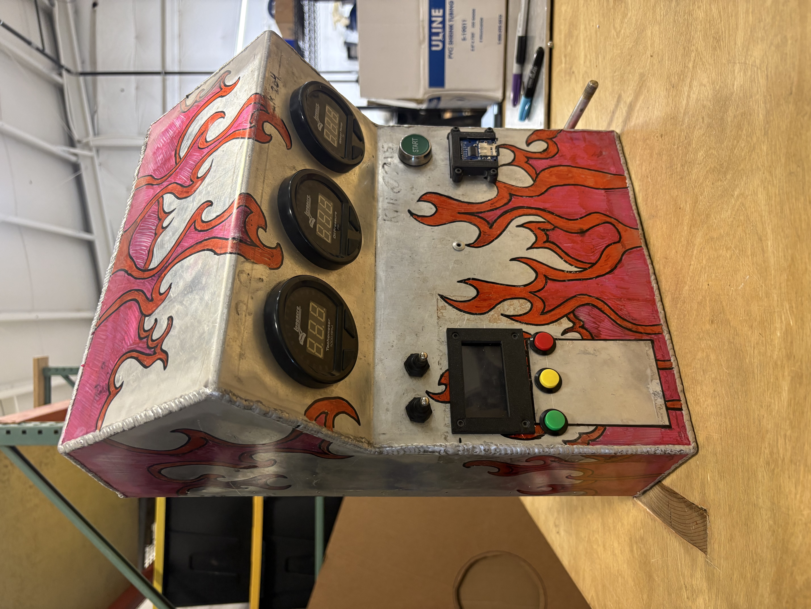
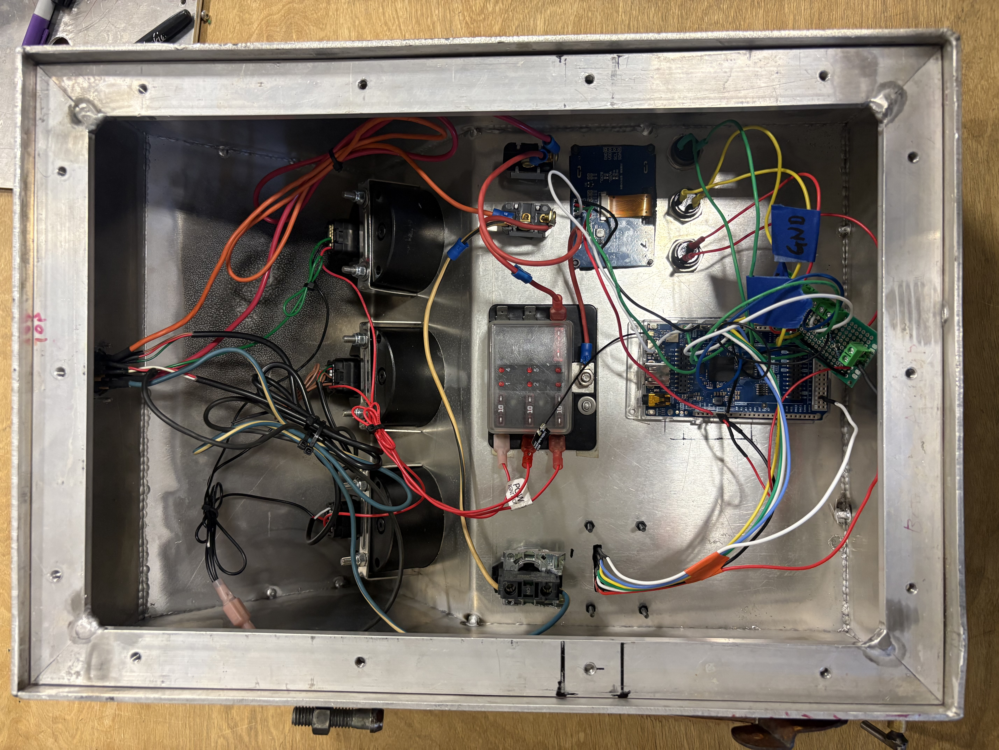
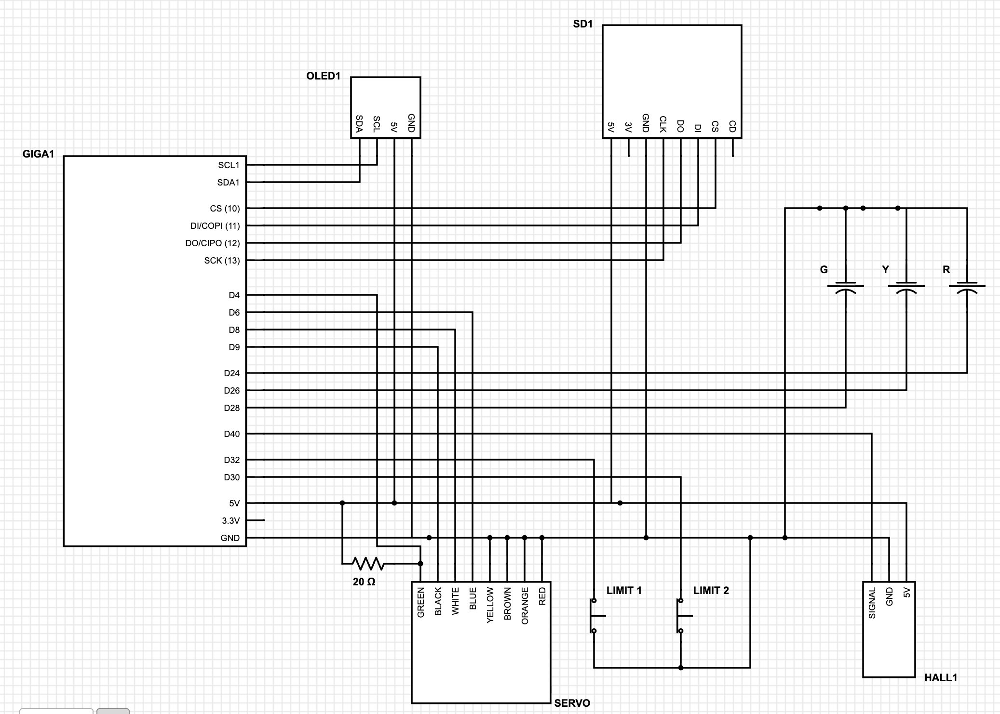

Electronic Throttle Control
Project Overview
Ryzing Technologies maintains the ability to test extreme weather equipment in the extreme conditions they are designed to operate in. This includes extreme wind testing, which we accomplish using repurposed fan boat engines and propellers. Our pair of Cadillac 500 V8 engines are capable of sustaining 100 MPH laminar flow with driven aggregate, sand, and water.
The original design of this setup was a direct cable linkage from a remote control lever to the carburetor, with an RPM gauge and wind speed gauge providing readouts. A human operator would stand at the control box and manually adjust the throttle to maintain the desired RPM and therefore wind speed based on the gauge readings. To enhance the precision and repeatability of our testing, and allow for more specialized testing, I designed, fabricated, and installed a system to allow testing profiles to be loaded and run autonomously on these engines. Testing profiles are saved as CSV files with target RPMs and durations on a micro SD card, where they are read and displayed by an onboard microcontroller. The microcontroller controls the throttle cable via a servo motor, using a Hall effect sensor mounted on the crankshaft pulley to allow closed-loop control.
Issues with the Old Design
- Operator had to manually adjust throttle continuously for entire test duration
- Required direct human presence for 8+ hour testing sessions
- Wind speed consistency entirely dependent on operator reaction time and attention
- No way to reproduce identical test conditions across separate testing sessions
- Operator fatigue near a running V8 engine required shift changes and substaintial PPE
Implemented Fixes
- Closed-loop servo control automatically maintains target throttle position
- Autonomous operation eliminates need for a dedicated operator during test runs
- Hall effect sensor feedback holds RPM within tight tolerance via PID control
- CSV-based test profiles allow custom and identical conditions to be repeated on demand
- Operator can monitor and control tests remotely instead of standing by the engine
Mechanical Design
The choice of motor was given by what the company had on hand: a servo with roughly 220 oz. in of continuous torque in our RPM range. Our original design used a coupler directly between the throttle arm and the servo shaft, with the servo mounted on the intake manifold. A machined aluminum plate supported the servo in an aluminum brace, with vibration damping mounts affixing this assembly to the plate. A machined coupler attached the servo shaft to the throttle shaft, with attachment points for a carburetor return spring and cable mounting for manual control. This design proved difficult to maintain concentricity with the servo shaft and alignment to the carburetor, coupled with heat and vibration from the engine itself. To solve this constellation of issues that arose, we returned to a cable drive system.
| Return Spring K Value (lb/in) | Continuous Motor Torque (oz-in) | Spring Moment Arm (in) | Target RMS Load | Resulting Pulley Radius (in) |
|---|---|---|---|---|
| 1.57 | 223 | 1.5 | 20% | 1.0 |
Control Loop
An onboard Hall effect sensor mounted to the crankshaft pulley provides an RPM estimate across a 5 second interval. The Arduino uses this RPM reading for closed loop control, with a PID controller handling RPM changes.
Control Box
The control box is essentially the brain of the entire system.
Control Box

The control box is essentially the brain of the entire system. It houses the Arduino, the servo driver, and all the connectors for the Hall effect sensor and power distribution... (keep writing — the text will wrap around the image)

Inside, wiring is routed through... (more text here wraps around the right-floated image)
Block Diagram
